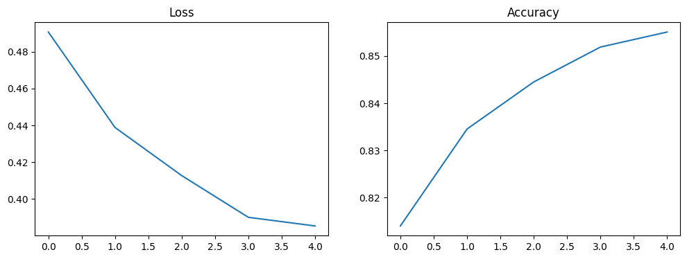
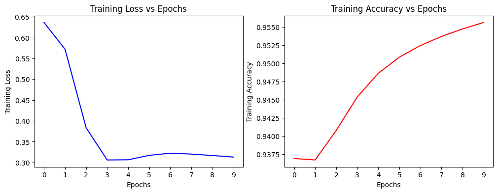

Session 6: Metrics & Losses#
You need to read the theory lectures before practicing with this notebook:
from google.colab import drive
drive.mount('/content/drive')
Mounted at /content/drive
!unzip "/content/drive/MyDrive/Colab Notebooks/ML-intensive/data/fashion_data.zip" -d "/content"
Custom DataLoader#
from PIL import Image
import os
import numpy as np
image = Image.open("/content/data/train/2/1001.png")
print(image.size)
image = image.resize((image.width*2, image.height*2))
image
(28, 28)
Create Path#
Breakdown of code#
# View subfolders in train folder
dir = '/content/data/train'
folders = os.listdir(dir)
folders
['2', '8', '1', '7', '5', '0', '4', '3', '9', '6']
# access to folders and image names
folder_path = os.path.join(dir, folders[0])
image_names = os.listdir(folder_path)
image_names[:10]
['3841.png',
'7745.png',
'793.png',
'24082.png',
'16689.png',
'34190.png',
'55052.png',
'45270.png',
'51924.png',
'52590.png']
# connect the folder path with the image name using loop
image_paths = []
temp = []
for image_name in image_names:
temp.append(os.path.join(folder_path, image_name))
image_paths.extend(temp)
image_paths[:10]
['/content/data/train/2/3841.png',
'/content/data/train/2/7745.png',
'/content/data/train/2/793.png',
'/content/data/train/2/24082.png',
'/content/data/train/2/16689.png',
'/content/data/train/2/34190.png',
'/content/data/train/2/55052.png',
'/content/data/train/2/45270.png',
'/content/data/train/2/51924.png',
'/content/data/train/2/52590.png']
# connect the folder path with the image using list comprehension
image_paths.extend([os.path.join(folder_path, image_name) for image_name in image_names])
image_paths[:10]
['/content/data/train/2/3841.png',
'/content/data/train/2/7745.png',
'/content/data/train/2/793.png',
'/content/data/train/2/24082.png',
'/content/data/train/2/16689.png',
'/content/data/train/2/34190.png',
'/content/data/train/2/55052.png',
'/content/data/train/2/45270.png',
'/content/data/train/2/51924.png',
'/content/data/train/2/52590.png']
labels = []
# string type -> int type
list_label = [int(folders[0])] * len(image_names)
labels.extend(list_label) # extend: add a list to another list
labels[:10]
[2, 2, 2, 2, 2, 2, 2, 2, 2, 2]
Collect into 1 cell code#
dir = '/content/data/train'
image_paths = []
labels = []
for folder in os.listdir(dir):
folder_path = os.path.join(dir, folder)
image_names = os.listdir(folder_path)
image_paths.extend([os.path.join(folder_path, image_name) for image_name in image_names])
labels.extend([int(folder)] * len(image_names))
View the result#
image_paths[6000:6010]
['/content/data/train/8/9187.png',
'/content/data/train/8/53578.png',
'/content/data/train/8/8960.png',
'/content/data/train/8/26191.png',
'/content/data/train/8/49778.png',
'/content/data/train/8/49695.png',
'/content/data/train/8/41676.png',
'/content/data/train/8/51462.png',
'/content/data/train/8/22633.png',
'/content/data/train/8/27530.png']
labels[6000:6010]
[8, 8, 8, 8, 8, 8, 8, 8, 8, 8]
Main class for data logger#
Let’s see the overal structure of our class
Note: method with format __method__ is required, with _method means you only should use inside the class and method means you can call it from the outside
import tensorflow as tf
class FashionDataset(tf.keras.utils.Sequence):
# three methods __init__, __getiteem__, __len__ should be implemented
def __init__(self, root_dir, batch_size=32):
pass
def _get_all_paths_and_labels(self, dir):
pass
def on_epoch_end(self):
pass
def __getitem__(self):
pass
def get_input_path(self, start, end):
pass
def get_output_batch(self, start, end):
pass
def __len__(self):
pass
import tensorflow as tf
class FashionDataset(tf.keras.utils.Sequence):
# three methods __init__, __getiteem__, __len__ should be implemented
def __init__(self, root_dir, batch_size=32):
self.image_paths, self.labels, self.num_classes = self._get_all_paths_and_labels(root_dir)
self.batch_size = batch_size
self.num_samples = len(self.labels)
self.length = self.num_samples // self.batch_size # training step
def _get_all_paths_and_labels(self, dir):
image_paths = []
labels = []
num_classes = len(os.listdir(dir))
for folder in os.listdir(dir):
folder_path = os.path.join(dir, folder)
image_names = os.listdir(folder_path)
image_paths.extend([os.path.join(folder_path, image_name) for image_name in image_names])
labels.extend([int(folder)] * len(image_names))
image_paths = np.array(image_paths)
labels = np.array(labels)
return image_paths, labels, num_classes
def on_epoch_end(self):
pass
def __getitem__(self, index):
start_index = index * self.batch_size
end_index = start_index + self.batch_size
inputs = self._get_input_batch(start_index, end_index)
outputs = self._get_output_batch(start_index, end_index)
return inputs, outputs
def _get_input_batch(self, start, end):
inputs = []
for path in self.image_paths[start:end]:
pil_image = Image.open(path)
image = np.array(pil_image)
image = image.flatten()
inputs.append(image)
inputs = np.array(inputs)
inputs = inputs / 255.0 # normalize
return inputs
def _get_output_batch(self, start, end):
outputs = self.labels[start:end]
outputs = tf.keras.utils.to_categorical(outputs, self.num_classes) # one-hot-encoding
return outputs
def __len__(self):
return self.length
train_dataset = FashionDataset("/content/data/train", batch_size=32)
x, y = train_dataset[0]
print(x.shape)
print(y.shape)
(32, 784)
(32, 10)
Now you can either use the available training loop with this mlp architecture or you can customize the training loop by youself
from tensorflow.keras.models import Sequential
from tensorflow.keras.layers import Input, Dense, Flatten, Activation
from tensorflow.random import set_seed
from tensorflow.keras.backend import clear_session
clear_session()
set_seed(42)
np.random.seed(42)
# YOUR CODE HERE
model = Sequential()
# input layer
model.add(Input(shape=(x.shape[1:])))
# mlp
model.add(Dense(32, activation='relu', name='layer_1'))
model.add(Dense(64, activation='relu', name='layer_2'))
model.add(Dense(128, activation='relu', name='layer_3'))
model.add(Dense(64, activation='relu', name='layer_4'))
model.add(Dense(32, activation='relu', name='layer_5'))
model.add(Dense(10, activation='softmax', name='output_layer'))
model.summary()
Model: "sequential"
_________________________________________________________________
Layer (type) Output Shape Param #
=================================================================
layer_1 (Dense) (None, 32) 25120
layer_2 (Dense) (None, 64) 2112
layer_3 (Dense) (None, 128) 8320
layer_4 (Dense) (None, 64) 8256
layer_5 (Dense) (None, 32) 2080
output_layer (Dense) (None, 10) 330
=================================================================
Total params: 46,218
Trainable params: 46,218
Non-trainable params: 0
_________________________________________________________________
model.compile(optimizer='adam', loss='categorical_crossentropy', metrics=['accuracy'])
history = model.fit(train_dataset, epochs=5)
Epoch 1/5
1875/1875 [==============================] - 22s 10ms/step - loss: 0.4907 - accuracy: 0.8140
Epoch 2/5
1875/1875 [==============================] - 18s 9ms/step - loss: 0.4389 - accuracy: 0.8345
Epoch 3/5
1875/1875 [==============================] - 18s 9ms/step - loss: 0.4127 - accuracy: 0.8445
Epoch 4/5
1875/1875 [==============================] - 18s 9ms/step - loss: 0.3901 - accuracy: 0.8519
Epoch 5/5
1875/1875 [==============================] - 18s 10ms/step - loss: 0.3854 - accuracy: 0.8551
import matplotlib.pyplot as plt
plt.figure(figsize=(12,4))
plt.subplot(1,2,1)
plt.title('Loss')
plt.plot(history.history['loss'])
plt.subplot(1,2,2)
plt.title('Accuracy')
plt.plot(history.history['accuracy'])
plt.show()

Custom Training Loops#
from tqdm import tqdm # for progress bar
# Create a Sequential model
model = tf.keras.models.Sequential()
model.add(tf.keras.layers.Dense(10, activation='softmax'))
# set the hyperparameters
epochs = 10
loss_func = tf.keras.losses.CategoricalCrossentropy()
optimizer = tf.keras.optimizers.Adam()
# for calculating the mean
mean_loss = tf.keras.metrics.Mean()
mean_accuracy = tf.keras.metrics.Mean()
accuracy = tf.keras.metrics.CategoricalAccuracy()
his_loss = {}
his_accuracy = {}
# training loops (feed forward and backpropagation)
for epoch in tqdm(range(epochs)):
print(f"Epoch {epoch}:")
for step in range(len(train_dataset)):
# 1. Get data
x, y = train_dataset[step]
# 2. Neural networks
with tf.GradientTape() as tape:
# 2.1 Feed forward
preds = model(x)
loss = loss_func(y, preds)
# 2.2 Backpropation
grads = tape.gradient(loss, model.trainable_weights)
optimizer.apply_gradients(zip(grads, model.trainable_weights))
# 3. Store the metric
mean_loss.update_state(loss)
mean_accuracy.update_state(accuracy(y, preds))
print(f" Avg loss: {mean_loss.result().numpy()}")
print(f" Avg accuracy: {mean_accuracy.result().numpy()}")
his_loss[epoch] = mean_loss.result().numpy()
his_accuracy[epoch] = mean_accuracy.result().numpy()
mean_loss.reset_state()
mean_accuracy.reset_state()
0%| | 0/10 [00:00<?, ?it/s]
Epoch 0:
10%|█ | 1/10 [00:38<05:47, 38.63s/it]
Avg loss: 0.6363075375556946
Avg accuracy: 0.9368966817855835
Epoch 1:
20%|██ | 2/10 [01:16<05:07, 38.43s/it]
Avg loss: 0.5718590021133423
Avg accuracy: 0.9366992115974426
Epoch 2:
30%|███ | 3/10 [01:54<04:24, 37.83s/it]
Avg loss: 0.3835413157939911
Avg accuracy: 0.9407686591148376
Epoch 3:
40%|████ | 4/10 [02:33<03:50, 38.35s/it]
Avg loss: 0.3060646951198578
Avg accuracy: 0.9453691840171814
Epoch 4:
50%|█████ | 5/10 [03:11<03:11, 38.28s/it]
Avg loss: 0.30652278661727905
Avg accuracy: 0.948620080947876
Epoch 5:
60%|██████ | 6/10 [03:49<02:32, 38.24s/it]
Avg loss: 0.3172031342983246
Avg accuracy: 0.9508426785469055
Epoch 6:
70%|███████ | 7/10 [04:28<01:55, 38.42s/it]
Avg loss: 0.3223407566547394
Avg accuracy: 0.9524418711662292
Epoch 7:
80%|████████ | 8/10 [05:07<01:17, 38.57s/it]
Avg loss: 0.3202023506164551
Avg accuracy: 0.9536822438240051
Epoch 8:
90%|█████████ | 9/10 [05:45<00:38, 38.36s/it]
Avg loss: 0.3167265057563782
Avg accuracy: 0.9547190070152283
Epoch 9:
100%|██████████| 10/10 [06:23<00:00, 38.36s/it]
Avg loss: 0.3130231201648712
Avg accuracy: 0.9556078314781189
Visualize#
plt.figure(figsize=(12,4))
plt.subplot(1,2,1)
plt.plot(his_loss.keys(), his_loss.values(), color='blue')
plt.xlabel('Epochs')
plt.ylabel('Training Loss')
plt.title('Training Loss vs Epochs')
plt.xticks(list(his_loss.keys()))
plt.subplot(1,2,2)
plt.plot(his_accuracy.keys(), his_accuracy.values(), color='red')
plt.xlabel('Epochs')
plt.ylabel('Training Accuracy')
plt.title('Training Accuracy vs Epochs')
plt.xticks(list(his_accuracy.keys()))
plt.show()

model = tf.keras.models.Sequential()
model.add(tf.keras.layers.Dense(10, activation='softmax'))
epochs = 1
loss_func = tf.keras.losses.CategoricalCrossentropy()
optimizer = tf.keras.optimizers.Adam()
# for calculate mean
mean_loss = tf.keras.metrics.Mean()
mean_accuracy = tf.keras.metrics.Mean()
accuracy = tf.keras.metrics.CategoricalAccuracy()
# tqdm progress bar
for epoch in range(epochs):
print(f"Epoch {epoch}:")
for step in range(len(train_dataset)):
## Get data
x, y = train_dataset[step]
with tf.GradientTape() as tape:
## Get prediction
preds = model(x)
## Calculate loss
loss = loss_func(y, preds)
## Calculate gradients
grads = tape.gradient(loss, model.trainable_weights)
## Update weight
optimizer.apply_gradients(zip(grads, model.trainable_weights))
## Calculate metric
mean_loss.update_state(loss)
mean_accuracy.update_state(accuracy(y, preds))
print(f" Avg loss: {mean_loss.result().numpy()}")
print(f" Avg accuracy: {mean_accuracy.result().numpy()}")
mean_loss.reset_state()
mean_accuracy.reset_state()
Epoch 0:
Avg loss: 0.59450763463974
Avg accuracy: 0.7385523319244385
def inference_path(image_path):
pil_image = Image.open(image_path)
# resize if need
image = np.array(pil_image)
image = image.flatten()
image = image / 255
image = np.expand_dims(image, axis=0) # batch == 1
pred = model.predict(image)
pred_class = np.argmax(pred, axis=-1)[0]
return pred_class
inference_path("/content/data/train/0/1.png")
1/1 [==============================] - 0s 81ms/step
6